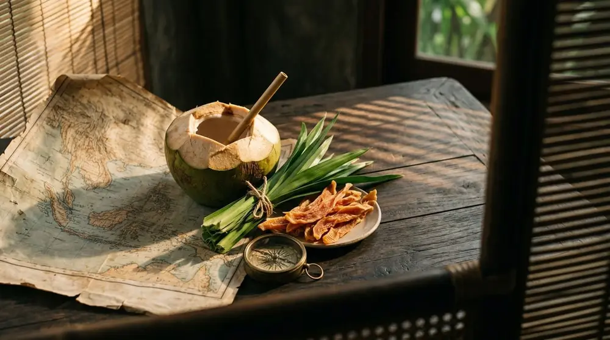
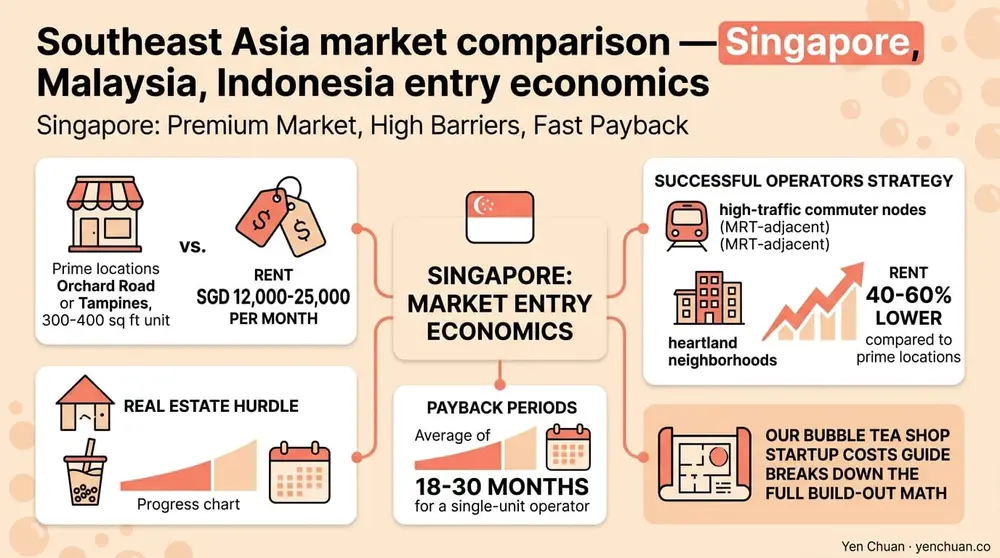
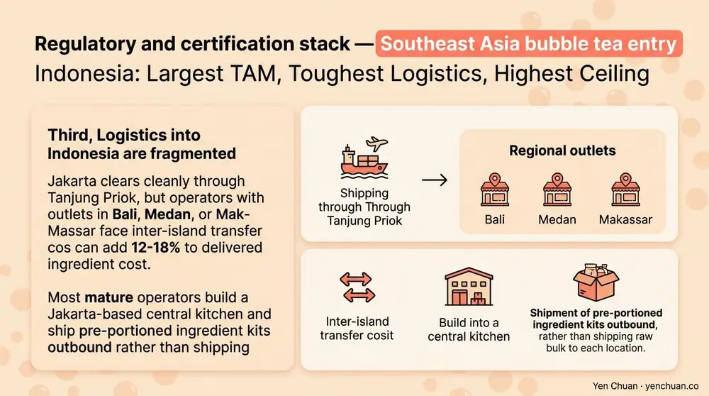

Articles / Business & sourcing
Southeast Asia Bubble Tea Market Entry Guide
2026-02-17 · Industry Trends, Business, Sourcing

Southeast Asia has quietly become the most contested battleground in the global bubble tea business. Singapore sits near saturation, Malaysia is consolidating around halal-certified regional chains, and Indonesia's 280-million-person market is still wide open for operators who understand the regulatory and cultural terrain. This guide walks through what Taiwanese and Western brands actually face when entering these three markets — the paperwork, the unit economics, the ingredient sourcing, and the partnership models that work in 2026.
Why Southeast Asia Is the Next Growth Frontier
Grand View Research values the APAC bubble tea market at roughly USD 1.4 billion in 2024 and forecasts a 7.6% CAGR through 2030. Within that, Southeast Asia is the fastest-moving pocket, with Indonesia posting double-digit growth since 2022. Three forces are driving it: a median age below 30 in ASEAN-6, a middle class that expanded by 80 million people in the last decade, and the region's existing tea-drinking culture that lowers consumer education cost compared with Western markets.
For buyers already sourcing from Taiwan, the logistics math is friendly. Ocean freight from Kaohsiung to Singapore, Port Klang, or Tanjung Priok is 5-10 days versus 21-45 for US or European routes. Lead times compress, working capital turns faster, and a shop that opens in Q1 can realistically run a second location by Q4. For a grounding on sourcing, our Taiwan vs China vs Southeast Asia sourcing comparison covers the raw-material trade-offs in detail.
Singapore: Premium Market, High Barriers, Fast Payback
Singapore has roughly 500 bubble tea outlets in a city-state of 5.9 million — one of the densest ratios in the world. The market rewards premium positioning, clean-label ingredients, and brand storytelling. Cup prices for mid-premium brands sit at SGD 5-8 (USD 3.70-5.90), with flagship locations reaching SGD 10+ for specialty cheese tea or artisan oolong.
What new entrants underestimate is the regulatory surface. The Singapore Food Agency (SFA) requires pre-market registration for any imported food ingredient, plus Nutri-Grade labeling on beverages sold at retail — a color-coded sugar and saturated-fat rating that directly affects menu design. Grades C and D (high sugar) cannot be advertised. Brands either reformulate with allulose or stevia before entry, or accept that their headline SKUs will not run paid marketing.
Real estate is the second hurdle. A 300-400 square foot unit in Orchard Road or Tampines runs SGD 12,000-25,000 per month. Successful operators target either high-traffic commuter nodes (MRT-adjacent) or heartland neighborhoods where rent is 40-60% lower. Payback periods average 18-30 months for a single-unit operator. Our bubble tea shop startup costs guide breaks down the full build-out math.

Malaysia: Halal-First, Franchise-Friendly, Scale-Ready
Malaysia runs on a different logic. The market is worth roughly USD 380 million in 2024 and 61% Muslim by population, which means halal certification is the single most important commercial decision a new brand makes. JAKIM certification is the gold standard — it is recognized across ASEAN and accepted in Middle East export lanes. Without it, a brand is locked out of shopping malls, airports, and most franchise conversations.
The practical path for an entrant is to work with a Taiwan supplier that already holds JAKIM certification on creamers, powders, and syrups. This removes the need to re-certify every ingredient at the importer level and cuts the compliance lead time from 9-14 months to roughly 3-5. Ingredients that commonly trip up halal review include alcohol-based flavor carriers, animal-derived gelatin in jellies, and non-certified emulsifiers in creamer. Ask for the JAKIM certificate number on every COA.
Unit economics in Malaysia run lower than Singapore but higher volume. Cup prices sit at MYR 7-15 (USD 1.50-3.20), rent in Kuala Lumpur mid-tier malls runs MYR 8,000-18,000 per month, and a trained barista earns MYR 1,800-2,500. Franchise models dominate: Tealive, Chatime Malaysia, and regional challengers have collectively opened more than 2,000 outlets. For brands entering via franchise partnership, expect MYR 150,000-300,000 upfront plus 6-8% royalty — the Taiwan bubble tea franchise guide covers the investment model in more depth.
Indonesia: Largest TAM, Toughest Logistics, Highest Ceiling
Indonesia is the prize and the puzzle. Statista estimates the Indonesian bubble tea market at USD 600 million in 2024, with projections above USD 1 billion by 2028. Jakarta alone has more than 3,000 boba outlets, and second-tier cities like Surabaya, Bandung, and Medan are opening faster than Jakarta did five years ago.
Three specific challenges separate winners from casualties. First, BPOM registration (Indonesia's food and drug authority) is mandatory for packaged ingredients and takes 4-8 months per SKU. Brands that wait until after incorporation to start BPOM lose a full season. Start the paperwork during supplier negotiation, not after lease signing.
Second, halal certification via BPJPH became mandatory in October 2024 for food and beverage service. MUI certification alone is no longer sufficient — operators must register with BPJPH and use certified suppliers end-to-end. This has reshaped the ingredient supply map and favored Taiwan exporters who hold stacked certifications.
Third, logistics into Indonesia are fragmented. Jakarta clears cleanly through Tanjung Priok, but operators with outlets in Bali, Medan, or Makassar face inter-island transfer costs that can add 12-18% to delivered ingredient cost. Most mature operators build a Jakarta-based central kitchen and ship pre-portioned ingredient kits outbound rather than shipping raw bulk to each location.

The Ingredient Supply Decision: Direct-from-Taiwan vs Local Distribution
Nearly every brand entering Southeast Asia faces the same ingredient question: ship direct from Taiwan, or buy through a regional distributor holding local inventory? Both models work, and most mature operators run a hybrid.
Direct-from-Taiwan is the choice for signature SKUs — the flavor-defining tea base, the proprietary pearl, the house syrup. Buying direct protects recipe integrity and unlocks annual-contract pricing. Typical MOQ is one 20-foot container (8-10 tons), shipped FOB Kaohsiung. For operators opening fewer than 10 stores, this MOQ is a real constraint, and the answer is consolidation: combine orders with a co-marketing franchise partner or a Taiwan-based export consolidator.
Local distribution handles the long tail — commodity cups, lids, straws, seasonal fruit, backup inventory during ocean freight delays. Singapore and Kuala Lumpur both have mature distributor networks with 2-3 week replenishment cycles. Jakarta's network is improving but still carries a 10-15% markup over direct import. For powders and bases specifically, most operators import directly because the category is the biggest single line on the ingredient P&L — our Flavor Powders & Bases catalog has the specs most regional buyers request.
Entry Playbook: 90-Day Pre-Launch Checklist
A disciplined entrant runs the same checklist across all three markets, adapted for local regulation. Weeks 1-4: market entity formation, halal and food authority pre-registration filings, and short-list of 3-5 Taiwan suppliers with stacked certifications. Weeks 5-8: sample shipments for sensory panels, lease negotiation, and preliminary menu design with Nutri-Grade or local sugar-labeling compliance in mind. Weeks 9-12: staff hiring and training, soft-launch inventory build, local marketing setup.
For brands that prefer a turnkey path, a full-service Taiwan supplier can handle recipe development, ingredient supply, packaging design, and regional logistics through one account. This compresses the timeline by roughly 30-40% and is how most successful independent operators manage their first regional launch. See our Milk Tea Supplier Guide for the vetting process we recommend before signing a primary supplier.
Authority Citations
- Grand View Research — Asia Pacific Bubble Tea Market
- Singapore Food Agency — Food Import Requirements
- JAKIM Malaysia — Halal Certification Portal
- BPOM Indonesia — Food Registration
- Statista — Indonesia Bubble Tea Market Report 2024
About Yen Chuan
Yen Chuan has been at the heart of Taiwan's bubble tea industry for over 20 years, supplying premium powders, syrups, tapioca pearls, and tea leaves to thousands of boba shops worldwide. With an in-house R&D lab and a commitment to quality ingredients, Yen Chuan is more than a supplier — we're your partner in the boba business. We've helped brands enter Singapore, Malaysia, and Indonesia with stacked halal, HACCP, and ISO 22000 certifications already in place, which typically shortens regulatory lead time by two quarters.
Ready to Enter Southeast Asia?
Planning a Southeast Asia expansion? Get in touch with our export team — we'll help you align certifications, MOQs, and shipping schedules with your launch calendar. Need to see the product range first? Browse the Yen Chuan online store for wholesale specs and certification details.
Frequently Asked Questions
Q: Which Southeast Asian market is easiest for a new bubble tea brand? A: Malaysia typically offers the lowest regulatory friction if your supplier already holds JAKIM halal certification. Singapore is fastest to register but most expensive to operate. Indonesia has the largest total addressable market but the longest regulatory runway at 4-8 months for BPOM registration per SKU.
Q: Do I need halal certification for every Southeast Asia market? A: Yes in Indonesia (mandatory since October 2024) and effectively yes in Malaysia if you want mall and franchise access. Singapore does not require halal, but certification unlocks roughly 15% of the addressable consumer base. Sourcing from a Taiwan supplier with existing JAKIM certification usually covers Singapore and Malaysia in one step.
Q: How much does it cost to open a bubble tea shop in Singapore? A: Total build-out including equipment, first-year rent deposit, initial inventory, and staff training typically runs SGD 150,000-280,000 for a 300-400 square foot unit. Payback averages 18-30 months with strong location selection and clean menu pricing under Nutri-Grade B.
Q: Can I ship bubble tea ingredients direct from Taiwan to Indonesia? A: Yes, but the ingredients must be pre-registered with BPOM and covered by a halal certificate recognized under BPJPH. Direct-from-Taiwan MOQ is typically one 20-foot container. Smaller operators consolidate through a regional distributor or export partner to hit this threshold.
Q: What is the fastest way to enter the Malaysian bubble tea market? A: Partnering with an existing regional franchise or licensing a brand that already holds JAKIM certification compresses time-to-launch to 4-6 months. Building an independent brand from zero takes 9-14 months once halal certification and ingredient pre-registration are factored in.